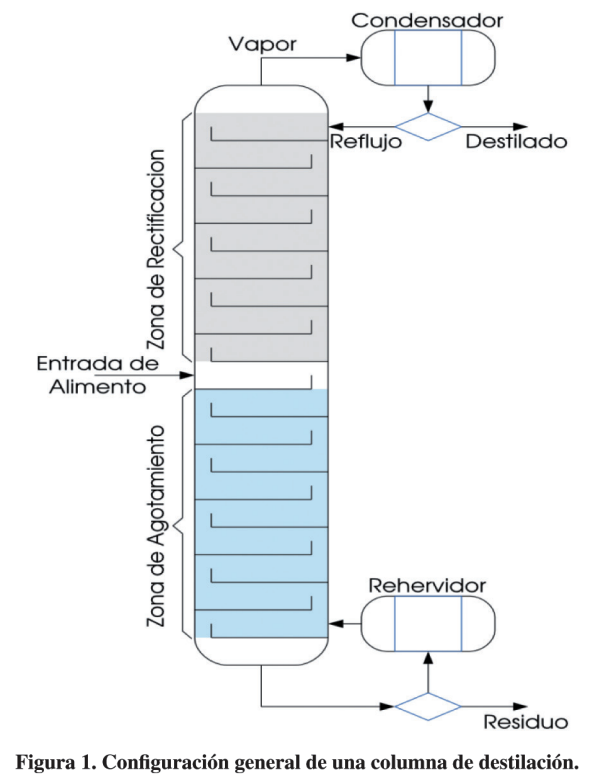
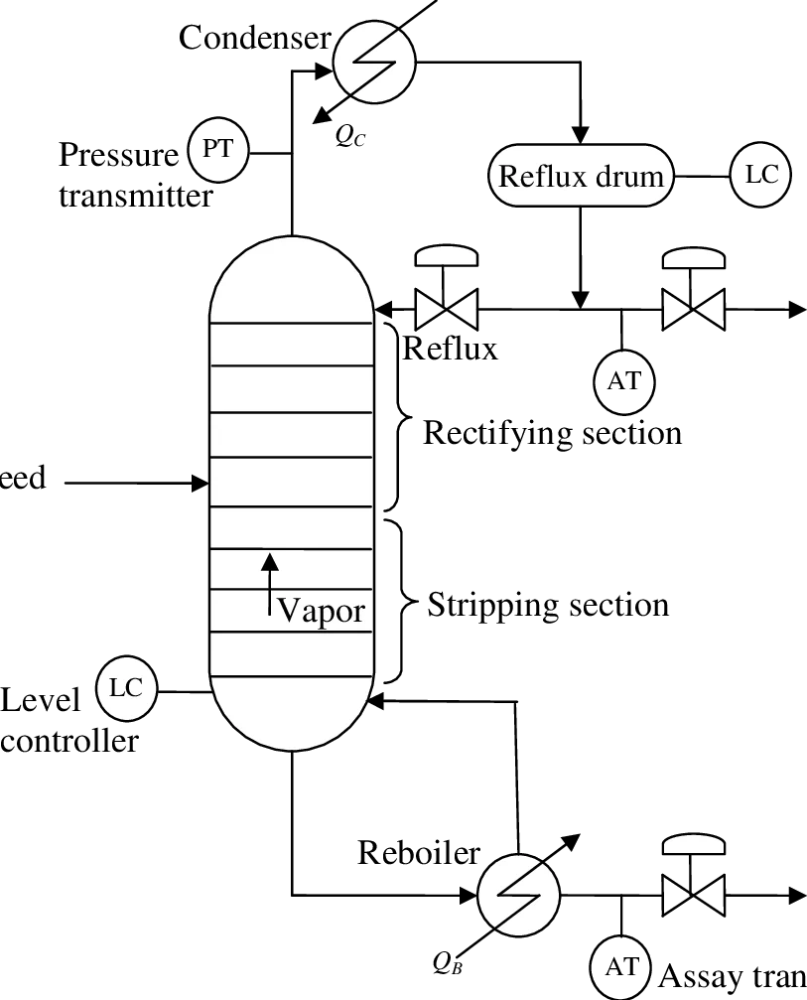
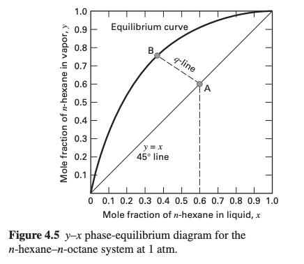
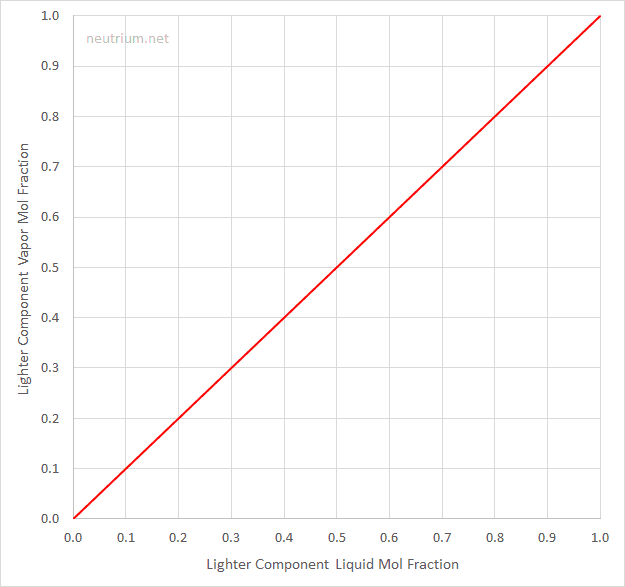
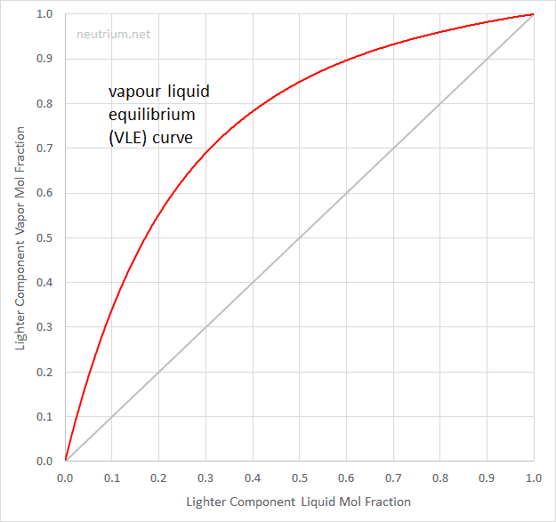
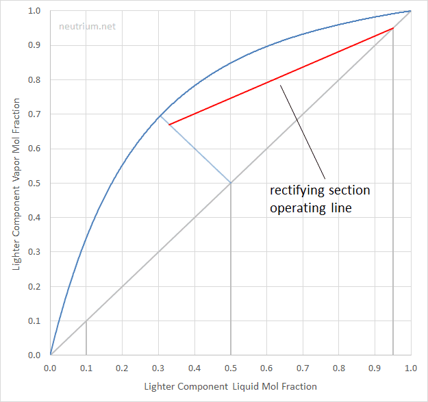
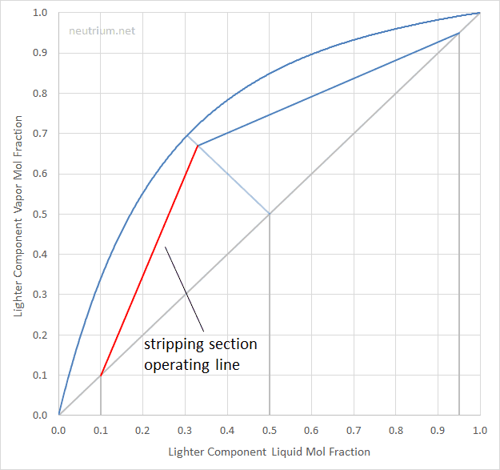
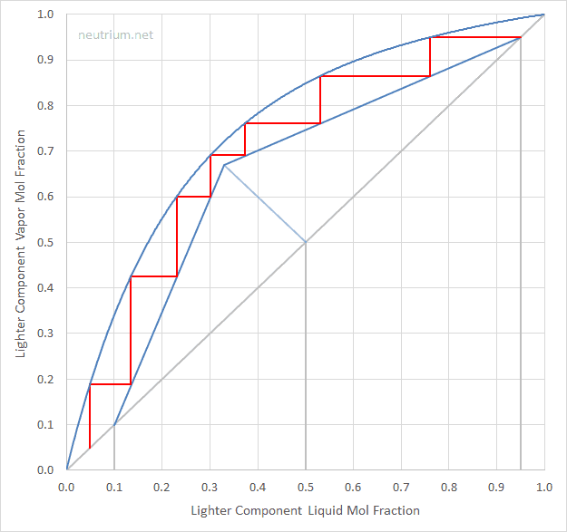
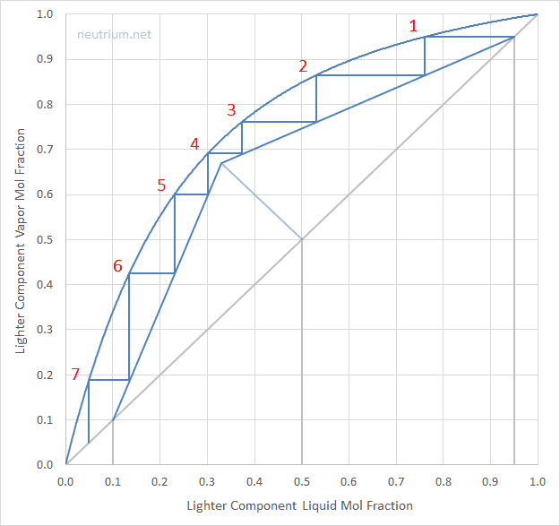
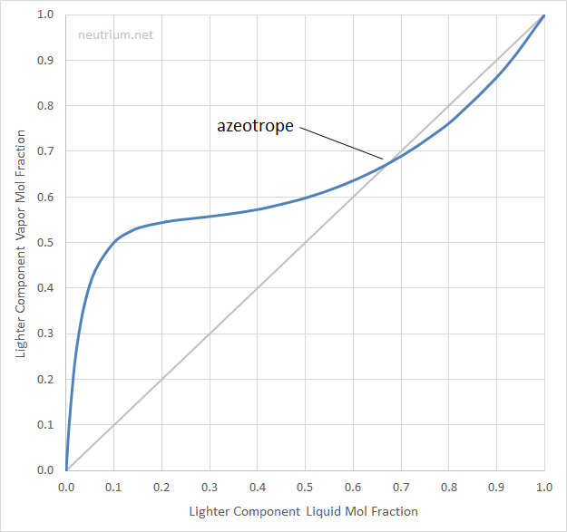

Destilación continua
Diseño de columnas de destilación binaria mediante el método gráfico de McCabe-Thiele: balances de materia, razón de reflujo, líneas de operación, etapas teóricas y eficiencia de platos.
La destilación continua es la operación unitaria de separación más utilizada en la industria química: desde refinerías de petróleo hasta la producción de etanol, ácido acético o solventes. A diferencia del alambique por lotes, una columna continua recibe alimentación de manera permanente y produce simultáneamente un destilado enriquecido en el componente volátil y un residuo empobrecido. El método gráfico de McCabe-Thiele permite dimensionar esta columna — determinar el número de etapas teóricas necesarias — con una herramienta visual elegante que integra el equilibrio vapor-líquido con los balances de materia.

Si su planta de pectina incluye una etapa de recuperación de etanol por destilación, debe:
- Definir el problema: composiciones de alimentación (xF), destilado (xD) y fondos (xW), a la presión de operación.
- Trazar la curva de equilibrio (y-x) del sistema etanol-agua a esa presión (datos de literatura o ELV del sistema).
- Elegir la razón de reflujo R: calcular Rmin gráficamente y operar entre Rmin y 2·Rmin.
- Aplicar McCabe-Thiele para contar las etapas teóricas y ubicar el plato de alimentación.
- Convertir a platos reales usando una eficiencia de columna Eo (típicamente 50-70 % para etanol-agua).
1. Principios de la destilación fraccionada continua
En una columna de destilación industrial el vapor ascendente y el líquido descendente se ponen en contacto repetidamente en una serie de etapas de equilibrio (platos o relleno). Cada etapa produce un enriquecimiento en el componente más volátil en la fase vapor y un empobrecimiento en la fase líquida.
Sección de rectificación (enriquecimiento)
Está por encima del plato de alimentación. El vapor ascendente, progresivamente enriquecido, se pone en contacto con el reflujo (líquido frío que desciende desde el condensador). En cada plato el vapor entrega componentes pesados al líquido y recibe componentes ligeros: el resultado es que el vapor se enriquece aún más a medida que sube. El propósito de esta sección es alcanzar la pureza especificada del destilado.
Sección de agotamiento (stripping)
Está por debajo del plato de alimentación. El líquido descendente (rico en componente ligero al llegar de la alimentación) se pone en contacto con el vapor caliente generado en el rehervidor. Ese vapor «despoja» (strips) el componente ligero del líquido descendente. El propósito de esta sección es maximizar la recuperación del componente volátil, dejando los fondos (W) tan empobrecidos como se requiera.
The Glenlivet, en Escocia, utiliza alambiques de cobre (copper pot stills) en un proceso de doble destilación por lotes. La forma alta de sus alambiques favorece un alto grado de reflujo interno, lo que produce un licor más ligero y frutal. Comprender los principios de la destilación continua facilita también la comprensión de por qué el diseño del alambique — su altura, forma y proporción — determina el carácter del whisky. En ambos casos, el principio físico es el mismo: enriquecimiento progresivo por contacto vapor-líquido repetido.

2. Balances de materia y razón de reflujo
Balance global de materia
Para la columna completa en estado estacionario:
$$F = D + W$$Y para el componente más volátil:
$$F \cdot x_F = D \cdot x_D + W \cdot x_W$$donde \(F\), \(D\) y \(W\) son los flujos molares de alimentación, destilado y fondos, y \(x_F\), \(x_D\), \(x_W\) sus respectivas fracciones molares del componente volátil.
Razón de reflujo (R)
La razón de reflujo \(R\) es el cociente entre el flujo molar de líquido que regresa como reflujo (\(L\)) y el flujo de destilado que se extrae (\(D\)):
$$R = \frac{L}{D}$$Es el parámetro de diseño y operación más importante de la columna, pues controla el balance entre inversión y operación:
| R alto | R bajo |
|---|---|
| Menos platos teóricos necesarios → columna más corta (menor inversión) | Más platos teóricos → columna más alta (mayor inversión) |
| Mayor vapor generado y condensado → mayor consumo energético (mayor operación) | Menor consumo energético |
El diseño óptimo busca el valor de R que minimiza el costo total anualizado (inversión + operación).
Supuesto de flujos molares constantes (CMO)
El método de McCabe-Thiele asume flujos molares constantes en cada sección: \(L\) y \(V\) constantes en la sección de rectificación; \(L'\) y \(V'\) constantes en la de agotamiento. Esto es válido cuando:
- Los calores latentes molares de los dos componentes son similares.
- Las pérdidas de calor en la columna son despreciables.
- El calor sensible es pequeño frente al latente.
3. Método gráfico de McCabe-Thiele
El método proporciona una construcción gráfica para determinar el número de etapas teóricas de una columna binaria. Requiere: datos de ELV (curva y-x), composiciones de alimentación, destilado y fondos, y la razón de reflujo.
Paso 1: El diagrama y-x
Se traza la curva de equilibrio vapor-líquido del sistema binario a la presión de operación. La curva siempre se encuentra por encima de la diagonal y = x para el componente más volátil.

Paso 2: Dibujar la diagonal
Se traza la línea de referencia \(y = x\) desde el origen (0,0) hasta la esquina superior derecha (1,1).

Paso 3: Agregar la curva de equilibrio
Se grafica la curva de equilibrio y-x del sistema. Siempre se ubica por encima de la diagonal para el componente más volátil (fracción molar y > x).

Paso 4: Marcar las composiciones
Se marcan en el eje x las composiciones de diseño: \(x_F\) (alimentación), \(x_D\) (destilado), \(x_B\) (fondos). Se trazan verticales hasta la diagonal para identificar los puntos de referencia.

Paso 5: Línea de condición de alimentación (línea q)
La línea q pasa por el punto (\(x_F, x_F\)) en la diagonal y su pendiente depende de la condición térmica de la alimentación:
$$\text{pendiente} = \frac{q}{q - 1}$$donde \(q\) es la fracción molar de líquido en la alimentación. Para un líquido saturado \(q=1\) (línea vertical); para vapor saturado \(q=0\) (línea horizontal); para mezclas parcialmente vaporizadas \(0 \lt q \lt 1\). Termodinámicamente, \(q\) es el calor necesario para vaporizar un mol de alimentación dividido entre el calor latente molar de vaporización:
$$q = \frac{H_V - H_F}{H_V - H_L} = \frac{\text{calor para llevar 1 mol de alimentación a vapor saturado}}{\text{calor latente molar de vaporización}}$$Esta definición rigurosa abarca todos los casos: para un líquido subenfriado hay que calentarlo antes de vaporizar, así que \(H_F \lt H_L\) y \(q \gt 1\) (línea con pendiente positiva pronunciada); para un vapor sobrecalentado \(H_F \gt H_V\) y \(q \lt 0\). Cuando solo se conocen temperaturas, una aproximación útil que linealiza el calor sensible es:
$$q \approx 1 - \frac{T_f - T_b}{T_d - T_b}$$donde \(T_f\) es la temperatura de la alimentación, \(T_b\) su punto de burbuja y \(T_d\) su punto de rocío. Verifíquela como tendencia, no como valor exacto: ignora la diferencia entre los calores específicos de líquido y vapor.


La condición térmica de la alimentación determina cómo se reparte el flujo entre las dos fases en el plato de alimentación. Las corrientes alrededor del plato cumplen el balance:
$$\bar{L} = L + qF \qquad ; \qquad \bar{V} = V - (1-q)F$$donde \(L\) y \(V\) son los flujos de líquido y vapor en la sección de rectificación, y \(\bar{L}\) y \(\bar{V}\) los de la sección de agotamiento. El siguiente explorador interactivo —adaptado de la simulación Feed Stages in a Distillation Column de R. L. Baumann (Universidad de Colorado Boulder)— muestra cómo cambian estos flujos y la pendiente de la línea q al variar la calidad \(q\) de la alimentación.
Explorador: línea q en el diagrama y-x
La línea q parte del punto \((x_F,\,x_F)\) en la diagonal con pendiente \(q/(q{-}1)\) y se intersecta con la curva de equilibrio, definiendo el «pinch point» para ese reflujo mínimo.
Curva de equilibrio con α = 2,5 (aprox. etanol-agua a 1 atm). La intersección de la línea q (naranja) con la curva de equilibrio (azul) y la línea de operación define el plato de alimentación óptimo en McCabe-Thiele.
Las dos animaciones siguientes ilustran el concepto de etapas y de calidad de alimentación en una columna real:
Etapas de alimentación en una columna de destilación: cómo la ubicación del plato de alimentación afecta la separación (LearnChemE, Universidad de Colorado Boulder).
Cómo la calidad \(q\) de la alimentación (desde vapor sobrecalentado hasta líquido subenfriado) redistribuye los caudales de líquido y vapor alrededor del plato de alimentación.
Paso 6: Línea de operación de la sección de rectificación
Esta línea recta parte del punto (\(x_D, x_D\)) en la diagonal y tiene pendiente \(R/(R+1)\):
$$y = \frac{R}{R+1}\,x + \frac{x_D}{R+1} \qquad\text{con}\qquad \frac{L}{V} = \frac{R}{R+1}$$Su intercepto con el eje \(y\) es \(x_D/(R+1)\): a mayor \(R\) la línea se acerca a la diagonal (menor intercepto). Se traza desde (\(x_D, x_D\)) hasta intersectar la línea q.

Paso 7: Línea de operación de la sección de agotamiento
Une el punto (\(x_B, x_B\)) en la diagonal con el punto donde la línea de rectificación toca la línea q. Su pendiente es \(\bar{L}/\bar{V}\) (con \(\bar{L} = L + qF\) y \(\bar{V} = V - (1-q)F\)):
$$y = \frac{\bar{L}}{\bar{V}}\,x - \frac{W\,x_W}{\bar{V}}$$Las dos líneas de operación se cruzan exactamente sobre la línea q: por eso basta trazar la de rectificación hasta la línea q y desde allí bajar a \((x_W, x_W)\).

Pasos 8 y 9: Construir los escalones y contar los platos
Desde (\(x_D, x_D\)) se trazan escalones: horizontal hasta la curva de equilibrio, luego vertical hasta la línea de operación correspondiente. Se cambia de línea de rectificación a agotamiento en el plato óptimo de alimentación (cuando hacerlo avanza más rápido hacia \(x_B\)). Se cuentan los escalones hasta cruzar \(x_B\).


4. Efectos de las variables de operación
Razón de reflujo
A mayor razón de reflujo \(R\), la línea de operación de rectificación se «aleja» de la diagonal y la curva de equilibrio: los escalones son más grandes y se necesitan menos platos. En la práctica, una columna más ancha (mayor caudal de vapor) compensa la reducción en altura, y los costos de rehervidor y condensador aumentan significativamente.
Pureza de productos
Al exigir composiciones más extremas de destilado (\(x_D \to 1\)) o fondos (\(x_W \to 0\)), los escalones quedan cada vez más comprimidos en las zonas estrechas del diagrama. El número de platos aumenta exponencialmente para incrementos de pureza pequeños.
Volatilidad relativa
A mayor separación entre la curva de equilibrio y la diagonal (mayor \(\alpha\)), los escalones son más grandes y se necesitan menos platos. Sistemas con \(\alpha\) cercano a 1 requieren columnas con cientos de platos teóricos (economía desfavorable).
Azeótropos
Cuando la curva de ELV cruza la diagonal, hay un azeótropo y el método de McCabe-Thiele no puede trazar escalones más allá de ese punto.

5. Límites del diseño: reflujo mínimo y total
| Condición | Definición | Etapas | Producción | Uso |
|---|---|---|---|---|
| Reflujo mínimo (Rmin) | Menor R que permite la separación; la línea de operación pasa por el «pinch point» (intersección con la curva de equilibrio y la línea q) | Infinitas | D > 0 | Referencia de diseño |
| Reflujo total | Todo el condensado regresa a la columna (D = 0, R = ∞); la línea de operación coincide con y = x | Mínimas (Nmin) | D = 0 | Arranque / pruebas |
| Reflujo óptimo | Típicamente R = 1,2 a 1,5·Rmin | Razonable | D > 0 | Operación continua |
El reflujo óptimo en operación industrial es habitualmente entre 1,2 y 1,5 veces el reflujo mínimo, lo que representa un balance económico razonable entre la altura de columna (costo de capital) y el consumo energético del rehervidor y condensador (costo operativo).
El «pinch point» y el reflujo mínimo
A medida que se reduce \(R\), la línea de operación de rectificación gira hacia la curva de equilibrio. En el reflujo mínimo \(R_{min}\) ambas se tocan: aparece un punto de tangencia o intersección — el «pinch point» (zona de pellizco) — donde la línea de operación y la curva de equilibrio coinciden. Allí la fuerza impulsora de transferencia de masa se anula y los escalones de McCabe-Thiele se acumulan sin avanzar: se requiere un número infinito de etapas. Por eso \(R_{min}\) es el límite inferior absoluto: ninguna columna real puede operar por debajo de él. Para sistemas con curva de equilibrio normal, el pinch ocurre justo donde la línea q corta la curva de equilibrio; para sistemas con curvatura pronunciada (o azeótropos cercanos) puede ser un punto de tangencia interior.
Estimación analítica: Fenske y Underwood
Cuando se dispone de una volatilidad relativa \(\alpha\) aproximadamente constante, los dos límites se estiman sin gráfica. El número mínimo de etapas a reflujo total se obtiene con la ecuación de Fenske:
$$N_{min} = \frac{\ln\!\left[\dfrac{x_D}{1-x_D}\cdot\dfrac{1-x_W}{x_W}\right]}{\ln \alpha}$$(equivalente a \(\ln[(x_D/x_W)\,((1-x_W)/(1-x_D))]/\ln\alpha\); \(N_{min}\) incluye el rehervidor como una etapa). El reflujo mínimo se obtiene con las dos ecuaciones de Underwood. Primero se halla la raíz \(\theta\), con \(1 \lt \theta \lt \alpha\), de la ecuación de balance en la zona de alimentación:
$$\sum_i \frac{\alpha_i\, x_{F,i}}{\alpha_i - \theta} = 1 - q$$Para alimentación de líquido saturado (\(q=1\)) el lado derecho es cero. Con ese \(\theta\), el reflujo mínimo es:
$$R_{min} + 1 = \sum_i \frac{\alpha_i\, x_{D,i}}{\alpha_i - \theta}$$La calculadora siguiente implementa exactamente estas dos ecuaciones para el caso binario (componentes ligero con volatilidad \(\alpha\) y pesado con volatilidad de referencia 1), suponiendo \(q=1\); el solver de \(\theta\) usa bisección en el intervalo \((1,\alpha)\).
Estimador rápido: etapas teóricas de Fenske-Underwood
Para una separación binaria ideal (Raoult), el número mínimo de etapas a reflujo total se estima con la ecuación de Fenske, y el Rmin con la ecuación de Underwood simplificada.
Fenske: $N_{min} = \dfrac{\ln\!\left[\frac{x_D}{1-x_D}\cdot\frac{1-x_W}{x_W}\right]}{\ln \alpha}$. Underwood (q=1): primero se resuelve $\theta$ (con $1 \lt \theta \lt \alpha$) en $\frac{\alpha\,x_F}{\alpha-\theta}+\frac{1-x_F}{1-\theta}=1-q=0$ por bisección, y luego $R_{min}+1 = \frac{\alpha\,x_D}{\alpha-\theta}+\frac{1-x_D}{1-\theta}$. La nota supone alimentación de líquido saturado (q=1).
6. Eficiencia de etapa
Un plato físico no logra el equilibrio perfecto entre vapor y líquido porque el tiempo de contacto es finito y la transferencia de masa tiene limitaciones cinéticas. Hay dos formas complementarias de cuantificarlo: la eficiencia de Murphree (plato a plato) y la eficiencia global (de toda la columna).
Eficiencia de etapa de Murphree
La eficiencia de Murphree de la fase vapor compara el enriquecimiento real que logra un plato \(n\) con el que lograría una etapa de equilibrio ideal:
$$E_{MV} = \frac{y_n - y_{n+1}}{y_n^{*} - y_{n+1}}$$donde \(y_n\) es la composición real del vapor que sale del plato \(n\), \(y_{n+1}\) la del vapor que entra (del plato inferior) y \(y_n^{*}\) la composición del vapor que estaría en equilibrio con el líquido que sale del plato \(n\). Si \(E_{MV}=1\) el plato alcanza el equilibrio (etapa ideal); valores típicos están entre 0,6 y 0,9. En el diagrama de McCabe-Thiele, una \(E_{MV} \lt 1\) hace que los escalones no lleguen hasta la curva de equilibrio sino solo una fracción \(E_{MV}\) de la distancia vertical, por lo que se requieren más platos reales que etapas teóricas.
Eficiencia global de la columna
La eficiencia global (\(E_o\)) es una sola cifra que resume el comportamiento de toda la columna y relaciona directamente las etapas teóricas con los platos reales:
$$E_o = \frac{\text{Número de etapas teóricas}}{\text{Número de platos reales}} \qquad\Longrightarrow\qquad \text{Platos reales} = \frac{\text{Etapas teóricas}}{E_o}$$No es idéntica a \(E_{MV}\) (la global integra el efecto de todos los platos y la pendiente relativa de las líneas de equilibrio y operación), pero ambas coinciden aproximadamente cuando \(E_{MV}\) es uniforme y las líneas son casi paralelas. Para diseño preliminar se usa \(E_o\).
| Sistema | Eo típica | Comentario |
|---|---|---|
| Mezclas orgánicas similares (hidrocarburos) | 60 – 80 % | Volatilidad relativa moderada a alta |
| Etanol-agua | 50 – 70 % | Alta viscosidad del agua reduce Eo |
| Sistemas con alta viscosidad | 30 – 50 % | La correlación de O'Connell es útil |
| Columnas de relleno (HETP) | — | Se usa altura equivalente a un plato teórico (HETP) |
La correlación de O'Connell relaciona Eo con la viscosidad del líquido y la volatilidad relativa. Para un diseño preliminar en la planta de pectina, asumir Eo = 60 % es una estimación conservadora razonable.
- Trazar la curva y-x del sistema a la presión de operación.
- Graficar las líneas de operación con la R elegida.
- Contar etapas teóricas con McCabe-Thiele → Nteo.
- Platos reales = Nteo / Eo.
- Dimensionar la columna: diámetro por la velocidad de vapor; altura = platos reales × separación entre platos (típicamente 0,5 – 0,6 m).
7. Bibliografía
- McCabe, W. L., Smith, J. C., & Harriott, P. (2005). Unit Operations of Chemical Engineering (7.ª ed.). McGraw-Hill. (Caps. 18-19: Equilibrium Separations; Distillation).
- Seader, J. D., Henley, E. J., & Roper, D. K. (2011). Separation Process Principles (3.ª ed.). Wiley. (Caps. 7-10: Distillation Columns).
- Perry, R. H., & Green, D. W. (Eds.) (2019). Perry's Chemical Engineers' Handbook (9.ª ed.). McGraw-Hill. (Sección 13: Distillation).
- Fenske, M. R. (1932). Fractionation of straight-run Pennsylvania gasoline. Industrial & Engineering Chemistry, 24(5), 482–485.
- Underwood, A. J. V. (1948). Fractional distillation of multicomponent mixtures. Chemical Engineering Progress, 44(8), 603–614.